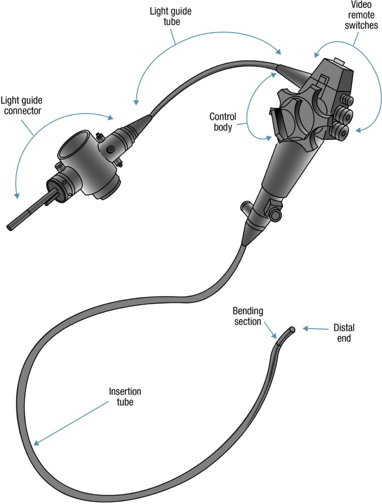
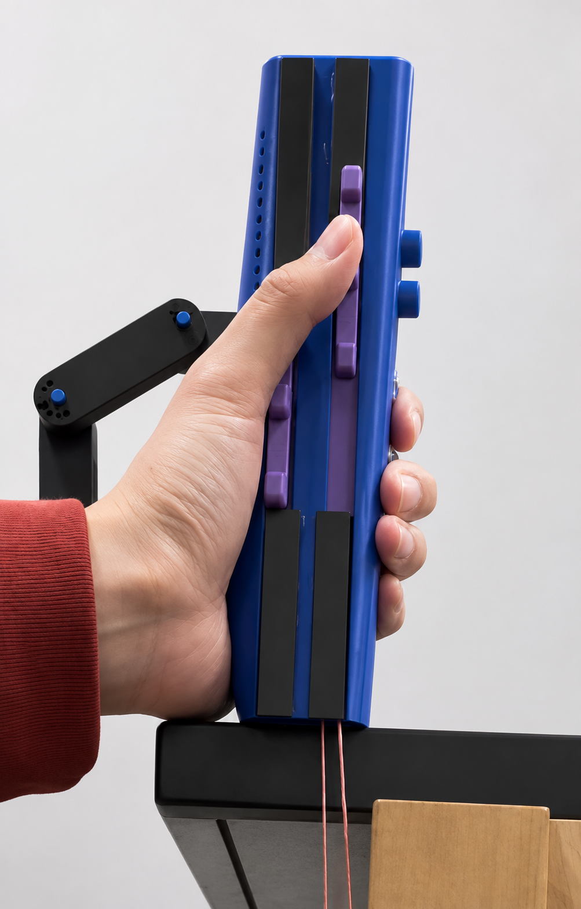
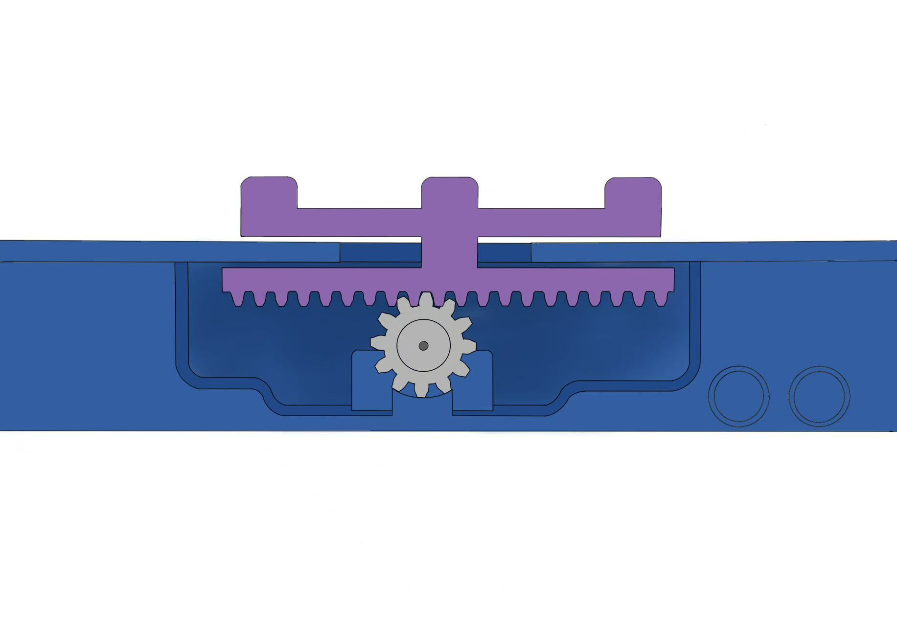
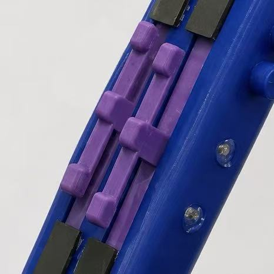
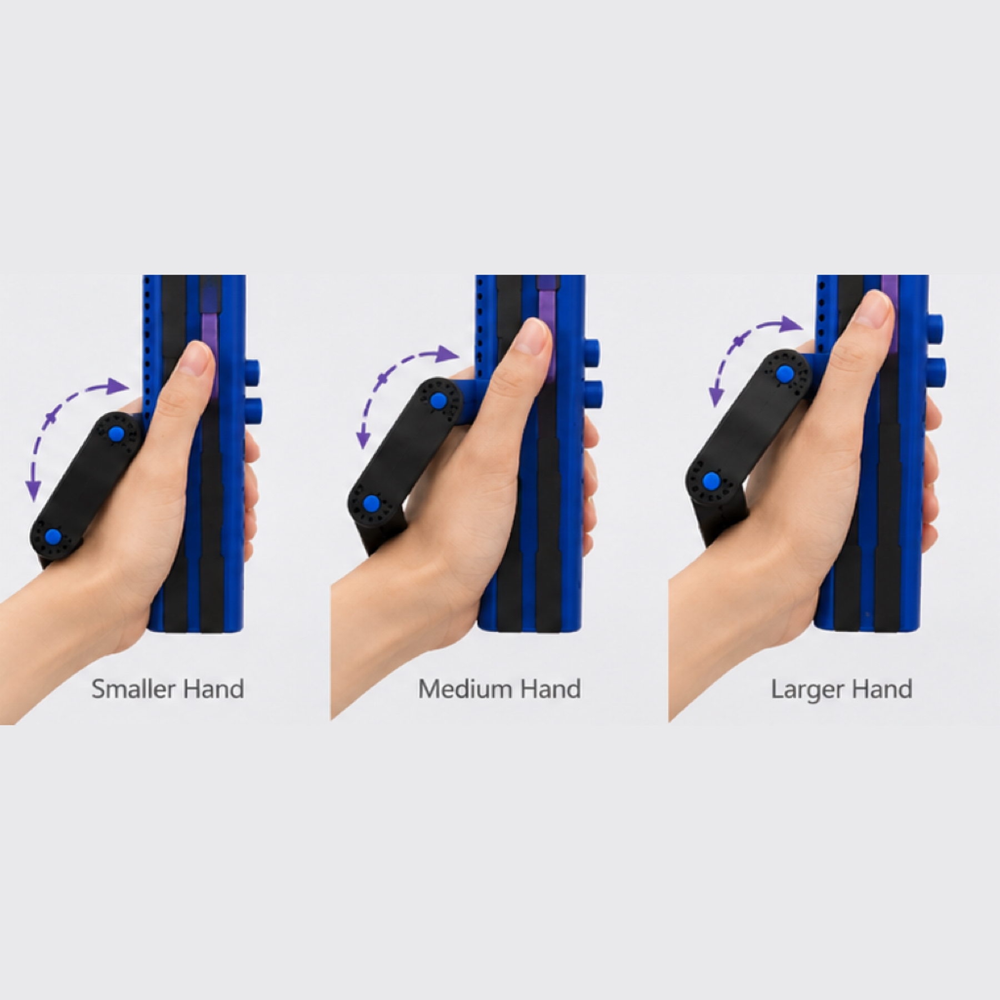
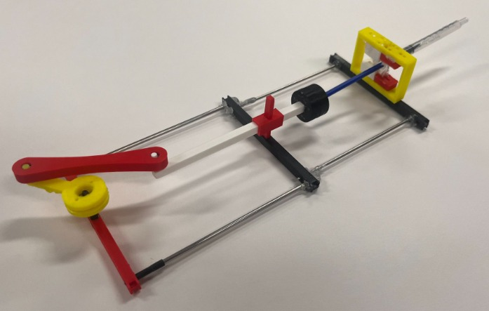
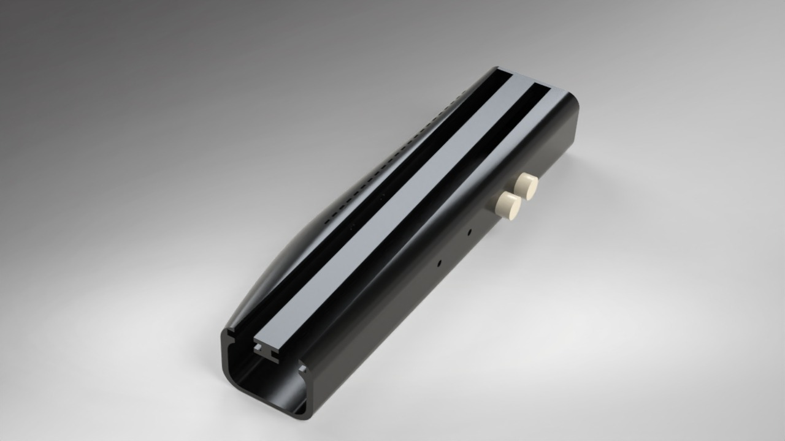
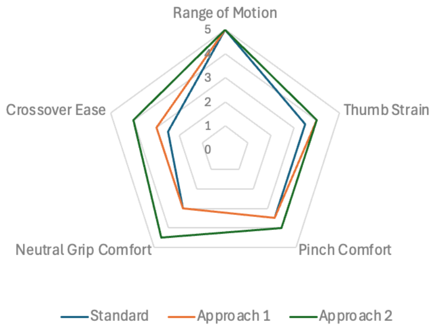

Ergonomic Redesign of the Flexible Endoscope Control Body
Endoscopy is performed over 20 million times a year in the US, yet more than 62% of endoscopists develop career-long musculoskeletal injuries from operating a device whose control body hasn't meaningfully changed since the 1980s. To understand the problem firsthand, our team interviewed practicing endoscopists, operated an endoscopy simulator to experience the hand and thumb strain directly, and observed live procedures in the OR. Those insights drove a redesign of the control body: a linear slider mechanism in place of the rotational knobs, an adjustable handle spanning the full range of clinical hand sizes, and a resistance module that preserves the tactile wire-tension feedback endoscopists rely on. Testing against a clinical advisor and a comfort survey of practicing users showed measurable improvement across ergonomic metrics.
- SolidWorks
- 3D Printing & Rapid Prototyping
- User Research
- Patent Landscape Analysis


Need Statement
An intuitive and ergonomic endoscope control section intended to decrease occupational injuries and repetitive strain from procedures, particularly in the hands and thumb by minimizing the force required to operate the knobs and generate adequate torque. The design should be accessible and adjustable for various hand sizes (hand sizes from 5th-percentile of female users to 95th percentile of male users), lighter weight than previous models, and require minimal adaptation from existing models. Based on survey data/blind testing on endoscopes, the proposed design should be significantly preferred over previous designs among endoscopists. The design should retain all existing features and functionalities of the current endoscope, including ease of sterilization and maintenance. This device should be reusable and affordable.
User Research & Design Requirements
Torquing the insertion tube with the right hand while maneuvering the knob with the left involves repetitive pinch forces and thumb strain — existing fixes like knob extenders and hands-free mounts only partially address it.
Replaced the rotational knob with a rack-and-pinion linear slider, moving control to a more intuitive finger motion and reducing thumb-specific loading.

Controlling two degrees of freedom without interfering each other.
Slider control at different heights to avoid obstructing the motion range in different tracks.

Injury risk climbs for smaller-handed and female operators, since standard control bodies aren't sized for the full clinical range.
Designed a modular adjustable handle — three components per joint, each with 180° of rotational freedom — so users can configure the geometry to their own hand size and grip.

Any redesign has to preserve the tactile feedback endoscopists rely on from the actuating wire tension, or the device will feel unfamiliar and erode trust in scope control.
Built a resistance-simulating module that converts wire tension into rotational motion pulling on a syringe, reproducing the same displacement-based feedback.

Extended contact with the current handle geometry contributes to palm and grip strain over long procedures.
Shaped an ergonomic outer shell that follows the natural contour of the palm, distributing contact pressure more evenly.

Design Iterations
The control body went through a full pivot before it converged — from a fundamentally different actuation method, to a cheap physical mockup that validated the new direction, to the final design built up feature by feature.
Kept the rotational knob but made it modular — swappable sets varying in diameter, thickness, shape, and node count. Testing showed it still relied on the same wrist-and-thumb motion driving the original strain, so we abandoned rotational actuation entirely.
Built a rough physical mockup of the slider mechanism using a bike chain approximating the rack-and-pinion track, testing the viability of slider mechanism in converting linear motion into rotational motion.
With the slider motion validated, added a modular adjustable handle — three components per joint, each with 180° of rotational freedom — to address the wide range of hand-sizes.
Added a resistance-simulating module to preserve the tactile wire-tension feedback endoscopists rely on, completing the final assembly.
Results & Validation

A comfort survey (n = 8) rated the standard endoscope against both design approaches across five ergonomic metrics — range of motion, thumb strain, pinch comfort, neutral grip comfort, and crossover ease. The final slider-and-resistance-module design (Approach 2) outperformed the standard endoscope on every axis surveyed.
“The adjustable handle allows me to rest my hand… the design is very simple and easy to use.”
— Dr. Harlan Rich, Clinical Advisor| User Testing | n = 8 comfort survey across five ergonomic metrics (Fig. 6) |
|---|---|
| Clinical Feedback | Qualitative review from clinical advisor Dr. Harlan Rich |
| Manufacturing | 3D-printed prototypes, including an early bike-chain-driven slider prototype |
| CAD Software | SolidWorks |
| IP Landscape | Patent landscape analysis conducted to confirm meaningful differentiation from prior art |
Future iterations: add a locking mechanism to the slider, consistent with existing endoscope models, and a customizable grip mold on the right side of the control section.
My Role
- Designed and CAD-modeled the slider housing body and ergonomic palm-fitting outer shell, iterating through 3D-printed prototypes to refine fit and mechanical function
- Designed and prototyped the adjustable handle mechanism — three modular components per joint, each with 180° of rotational freedom — allowing users to independently configure the handle geometry to their hand size and grip preference
- Conducted patent landscape analysis to map existing IP and ensure the design was meaningfully differentiated from prior solutions, informing its path toward market viability
Skills: CAD modeling (SolidWorks), 3D printing and rapid prototyping, ergonomic design, user-centered design, patent analysis